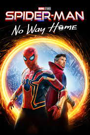
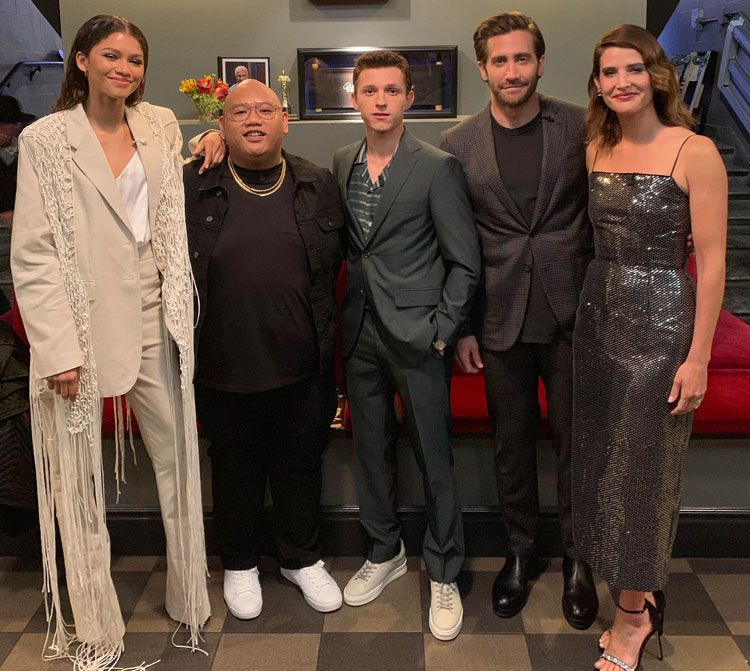
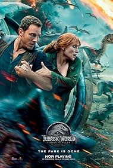
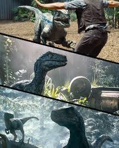
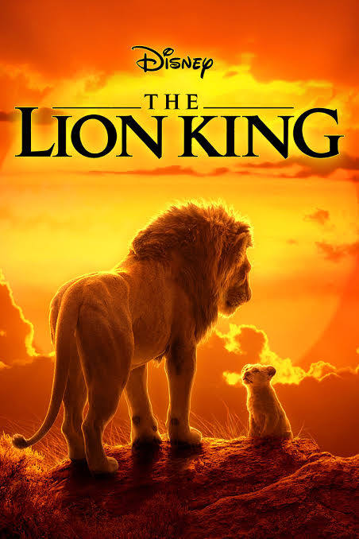

TOP 6
Avengers: Infinity War

Avengers: Infinity War (2018), directed by Anthony and Joe Russo, follows the Avengers and Guardians of the Galaxy as they join forces to stop Thanos from collecting the six Infinity Stones. Thanos, portrayed by Josh Brolin, seeks to use the stones to wipe out half of all life in the universe to achieve “balance.” Major battles occur across New York, Titan, and Wakanda, where the heroes fight his powerful Black Order
The film ends with Thanos obtaining all stones, snapping his fingers, and erasing half of all life, including many beloved heroes. Grossing over $2 billion, Infinity War received acclaim for its ambitious storytelling, special effects, and portrayal of Thanos. It set up the final events in Avengers: Endgame (2019), cementing its place as a pivotal film in superhero cinema.
- Robert Downey Jr. as Tony Stark/Iron Man
- Chris Hemsworth as Thor
- Mark Ruffalo as Bruce Banner/Hulk
- Chris Evans as Steve Rogers/Captain America
- Scarlett Johansson as Natasha Romanoff/Black Widow
- Josh Brolin as Thanos (motion capture)
- Benedict Cumberbatch as Dr. Stephen Strange
- Zoe Saldana as Gamora
- Chris Pratt as Peter Quill/Star-Lord
TOP 7
Spider-Man: No Way Home

- Directed by: Jon Watts
- Plot: After a spell to erase the world’s memory of his identity goes wrong, Peter Parker (Tom Holland) faces villains from across the multiverse, including Green Goblin and Doctor Octopus. With help from other versions of Spider-Man (Tobey Maguire and Andrew Garfield), Peter fights to restore balance but ultimately sacrifices his connections with loved ones.
- Box Office: $1.9 billion
- Notable For: Action, emotional depth, and nostalgic crossovers.
Main Cast:

- Tom Holland as Peter Parker / Spider-Man
- Zendaya as MJ
- Benedict Cumberbatch as Doctor Strange
- Jacob Batalon as Ned Leeds
- Willem Dafoe as Norman Osborn / Green Goblin
- Alfred Molina as Otto Octavius / Doctor Octopus
- Jamie Foxx as Max Dillon / Electro
TOP 8
Inside Out 2

- Directed by: Kelsey Mann
- Plot: The story revisits Riley, now a teenager, who is navigating the emotional complexities of adolescence. As she encounters new emotions like Anxiety, Embarrassment, Envy, and Ennui, her inner world becomes even more chaotic. The original emotions must work together to help Riley develop a balanced "Sense of Self" during a pivotal weekend at an ice hockey camp.
- Release Date: June 14, 2024
- Notable For: Exploring themes of teenage identity, self-discovery, and the challenges of growing up, with new and returning emotions in Riley’s mind.
"Inside Out 2," the highly anticipated sequel from Pixar and Disney, quickly reached a box office milestone of $1 billion in just 19 days, making it the fastest-grossing animated film to hit that benchmark. This achievement underscores its popularity, particularly among family audiences, who constituted over 70% of its initial viewers. This marks a notable success for Disney as it faces post-pandemic challenges in driving theater attendance, reaffirming Pixar's appeal with both audiences and critics alike

TOP 9
Jurassic World

- Directed by: Colin Trevorrow
- Release Date: June 12, 2015
- Plot: Set on Isla Nublar, where a dinosaur theme park has been fully operational, the story follows brothers Zach and Gray Mitchell as they visit their aunt Claire, the park's operations manager. The park’s latest attraction, the genetically engineered Indominus rex, escapes and wreaks havoc. Claire teams up with Owen Grady, who has been training Velociraptors, to contain the crisis as they navigate threats from both dinosaurs and park management.

- Box Office: The film grossed approximately $1.6 billion worldwide, making it the highest-grossing film of 2015 and the highest-grossing film in the Jurassic Park series.
TOP 10
The Lion King

- Release Date: June 15, 1994
- Directed by: Roger Allers and Rob Minkoff
- Plot: The film follows Simba, the young son of King Mufasa, as he grapples with his royal destiny and the betrayal of his uncle, Scar, who seeks to take the throne. After Scar's treachery leads to Mufasa's death, Simba flees, living a carefree life until he learns of the devastation Scar has wrought on their homeland. With the help of friends, Simba returns to reclaim his rightful place as king.
- Box Office and Reception: Upon its release, The Lion King grossed over $1.6 billion worldwide, making it the highest-grossing animated film at the time. It won two Academy Awards for its score and the song "Can You Feel the Love Tonight."
- Remake: A photorealistic CGI version directed by Jon Favreau was released on July 19, 2019, achieving similar box office success while receiving mixed reviews regarding its emotional impact compared to the original.
LISTEN
NEXT PAGE
PREVIOUS PAGE